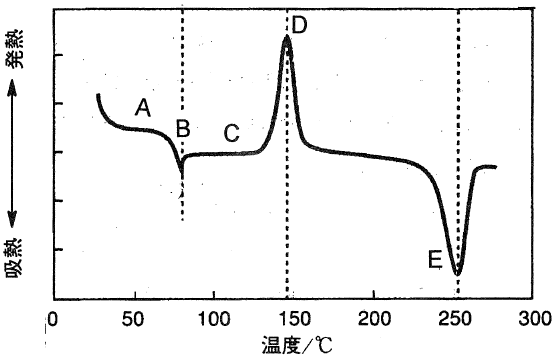

平成23年度 問17 高分子化学
結晶化度0%のポリエチレンテレフタラート（PET）を室温から280℃まで、一定速度で昇温させた場合の示差走査熱量（DSC）測定結果（下図参照）に関する次の記述の、【 】に入る語句の組合せとして、正しいものはどれか。ここで、図中のA～Eは、設問中のA〜Eに対応する。

まず、【 A 】状態のPETを室温から昇温していき、試料の温度が【 B 】に到達すると、 高分子の分子運動が増大し、【 A 】状態から【 C 】状態へ変化した。さらに昇温を続けると、発熱ピークが出現した。これは【 D 】に起因する。その後、ある温度に到達すると【 E 】による吸熱ピークが出現し、エンタルピーが急激に増加した。
| 選択肢 | A | B | C | D | E | |
|---|---|---|---|---|---|---|
|
①
|
ガラス | ガラス転移点 | 液晶 | 結晶化 | 分解 | |
|
②
|
非晶 | 結晶化温度 | 液晶 | 一次転移 | 融解 | |
|
③
|
結晶 | 融点 | ガラス | ガラス転移 | 分解 | |
|
④
|
ガラス | ガラス転移点 | 過冷却液体 | 結晶化 | 融解 | |
|
⑤
|
結晶 | 二次転移点 | 液晶 | 一次転移 | 分解 | |
正答
④ A：ガラス、B：ガラス転移点、C：過冷却液体、D：結晶化、E：融解
Aの状態はガラス状態です。結晶化度0%のPETは非晶質（アモルファス）で、室温ではガラス状態にあります。
Bのガラス転移点に到達すると、分子運動が増大し、ガラス状態から過冷却液体状態（C）に変化します。
Dの発熱ピークは結晶化によるものです。非晶質のPETが熱を得て分子が再配列し、結晶構造を形成する過程で熱を放出します。
Eの吸熱ピークは融解によるものです。形成された結晶が融けるときに熱を吸収します。